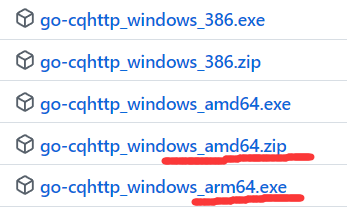
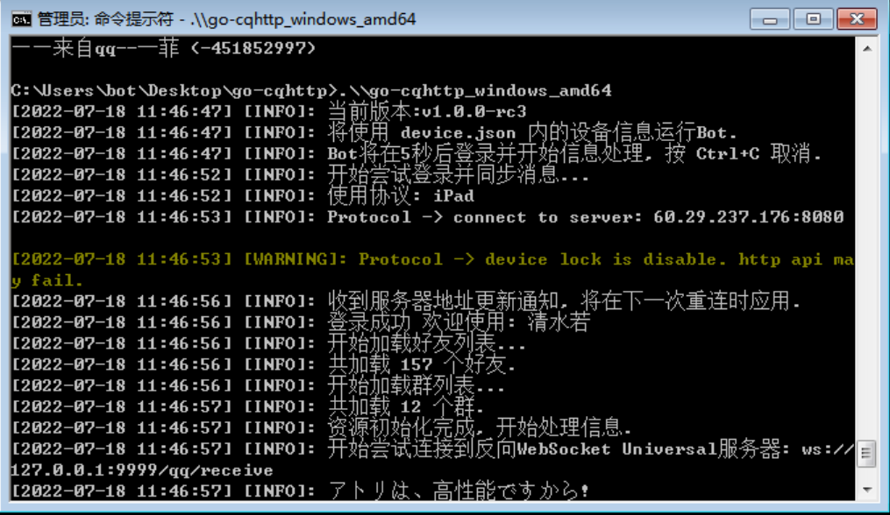

本页面目录
说明：你要准备2个QQ号，1个用来做机器人，1个用来做管理员。
QQ框架目前可选方案有node-onebot、oicq、go-cqhttp等。下面以对接node-onebot为例，对接oicq可参见：https://github.com/takayama-lily/oicq/tree/master/http-api
1.对接Linux版QQ
linux平台的qq框架推荐对接go-cqhttp
参阅此贴：https://www.bluehe.cn/archives/717/对接node-onebot
1.安装node
可以先用命令 node -v 看下有没有返回版本号，如果有的话则说明已经安装。如果没有按而下步骤安装：
mkdir nodejs #在当前目录下新建nodejs目录
cd nodejs #cd到刚刚新建的目录
wget https://nodejs.org/dist/v16.14.0/node-v16.14.0-linux-x64.tar.xz #下载压缩包
tar -xvf node-v16.14.0-linux-x64.tar.xz #解压压缩包
cd node-v16.14.0-linux-x64 #进入解压目录
vi /etc/profile #profile文件用于设置系统级的环境变量和启动程序，在这个文件下配置会对所有用户生效。
export NODEJS_HOME=/root/nodejs/node-v16.14.0-linux-x64 #加入文本末尾
export PATH=$PATH:$NODEJS_HOME/bin #加入文本末尾
#然后按键盘字母i进入编辑模式，在最末尾粘贴下面
source /etc/profile #刷新立即生效
node -v #测试是否返回版本号，返回则代表安装成功
2.安装git
centos系统安装git
yum -y install curl-devel expat-devel gettext-devel openssl-devel zlib-devel git #安装所需依赖包
yum -y install git #安装git
git --version #检查是否返回版本号
#debian系统安装git
apt install git #安装所需依赖包
git --version #检查是否返回版本号3.安装pm2
centos系统安装pm2
npm install pm2 -g #安装pm2
pm2 list #查看是否安装成功
debian系统安装pm2
apt install pm2 -g #安装pm2
pm2 list #查看是否安装成功4.安装onebot
mkdir onebot
cd onebot #cd到你想要安装目录就行，不一定要和我一样
git clone https://github.com/takayama-lily/node-onebot.git #如果拉取速度很慢，参考站内教程自建或白嫖一个前缀。
cd node-onebot #cd到刚刚拉取的目录
cp config.sample.js config.js #复制并重命名样本配置文件为config.js
vi config.js #打开配置文件开始编辑5.编辑onebot配置文件
按键盘字母i进入编辑模式，然后对应配置，按键盘esc退出编辑模式，输入命令:wq保存并退出。请注意看我 # 后面的注释，是需要注意的地方
"use strict";
// 将此文件更名为config.js才能生效哦
module.exports = {
//通用配置
general: {
platform: 3, //1:安卓手机 2:aPad 3:安卓手表 4:MacOS 5:iPad #建议选择3
log_level: "info", //trace,debug,info,warn,error,mark
use_cqhttp_notice: false, //是否使用cqhttp标准的notice事件格式
host: "localhost", //监听主机名 #如果机器人同一个服务器建议改为localhost
port: 5000, //端口 #默认5700建议修改，记得放行端口，不要和青龙面板等冲突
use_http: false, //启用http
use_ws: false, //启用正向ws，和http使用相同地址和端口
access_token: "", //访问api的token
secret: "", //上报数据的sha1签名密钥
post_timeout: 30, //post超时时间(秒)post_message_format:"array", //"string"或"array"
enable_cors: false, //是否允许跨域请求
enable_heartbeat: false, //是否启用ws心跳
heartbeat_interval: 15000, //ws心跳间隔(毫秒)
rate_limit_interval:500, //使用_rate_limited后缀限速调用api的排队间隔时间(毫秒)
event_filter: "", //json格式的事件过滤器文件路径
post_url: [ //上报地址，可以添加多个url
// "http://your.address.com:80",
],
ws_reverse_url: [ //反向ws地址，可以添加多个url
"ws://127.0.0.1:8080/qq/receive", #这里记得改成机器人的地址和端口，都在本地ip就用127.0.0.1
],
ws_reverse_reconnect_interval: 3000, //反向ws断线重连间隔(毫秒)，设为负数直接不重连
ws_reverse_reconnect_on_code_1000: true, //反向ws是否在关闭状态码为1000的时候重连
},
//每个账号的单独配置(用于覆盖通用配置)
147258369: {
},
};
// 安全注意：
// 监听0.0.0.0表示监听网卡上的所有地址。如果你的机器可以通过公网ip直接访问，同时你也没有设定access_token，则被认为是极不安全的。
// 你应该知道这样做会导致以下后果：任何人都可以无限制地访问你的Bot的所有API接口。
// 如果只需要在本地访问，建议将监听地址改为localhost。需要通过公网访问，你最好设定access_token。
//通用配置
general: {
platform: 3, //1:安卓手机 2:aPad 3:安卓手表 4:MacOS 5:iPad
#这个就是登录平台的意思，如果你之前部署过机器人，且打算用同一个qq号码做机器人，建议选择5。因为机器人之前用的就是ipad协议，
我选择1的时候反复让我扫码登录，选择5就正常了。只是经验之谈，可能不专业，供参考。也可以选择3，我看大部分玩家反馈选择3不容易风控。
host: "localhost", //监听主机名
#监听0.0.0.0表示监听网卡上的所有地址，建议改为localhost。如果你的onebot与机器人不在同一服务器则使用0.0.0.0
port: 5000, //端口
#这里的端口一定要注意不要和别的程序有冲突，比如青龙面板。如果冲突了就改成别的端口，但一定要记得放行端口。
ws_reverse_url: [ //反向ws地址，可以添加多个url
"ws://127.0.0.1:8080/qq/receive",
#这是机器人的反向链接地址，其中的8080端口记得改成你机器人端口，同时开启机器人的http server，即set autMan enable_http_server true6.启动node-onebot并初始化登录
第一次启动，请不要直接后台运行，需要进行登录初始化一下，按提示操作。
cd /onebot/node-onebot #cd到onebot目录，如果已经在当前目录直接跳下一步
node main 你的qq账号 #假如你的qq号码是123456，则node main 123456至此，你的onebot也成功跑起来了。 你可能会看到这样的报错“反向ws连接(ws://127.0.0.1:8080/qq/receive)被关闭，关闭码1006，将在3000毫秒后尝试连接“。马上进入下一步，机器人对接qqbot。
7.配置autMan
cd autMan #cd到安装目录
./autMan -t #终端交互启动
set autMan enable_http_server true #开启http服务，如果之前已经设置，则跳下一步
set qq masters 123&456&789 #设置qq机器人管理员
重启 #静默方式运行
8.配置onebot
cd /onebot/node-onebot #cd到你的onebot目录
node main.js 你的qq号码 #再次启动qqbot这时候，应该可以看到成功连接了。 然后你再用你之前设置的qq管理员给qq机器人发送“版本”，看看它是否有反应。 至此，已成功的对接了qqbot。然后Ctrl+C退出onebot，再使用下面的命令后台挂机。
9.后台运行onebot
#pm2守护onebot命令如下：
pm2 start "node main 机器人QQ号" #pm2方式启动onebot
pm2 list #此命令用来查看pm2守护的进程
pm2 restart "node main 机器人QQ号" #重启qq守护进程
pm2 delete "node main 机器人QQ号" #结束qq守护进程
2.对接Windows版QQ
1.下载windows版go-cqhttp，地址如下：
https://github.com/Mrs4s/go-cqhttp/releases/
2.配置
先双击运行一下exe文件go-cqhttp，会生成配置文件，配置文件中选择模式（如：手表模式），填写机器人qq号，反向ws地址那里填入ws://autMan地址:autMan端口/qq/receive
3.配置
命令行启动运行,启动时扫码登录或输入密码登录
